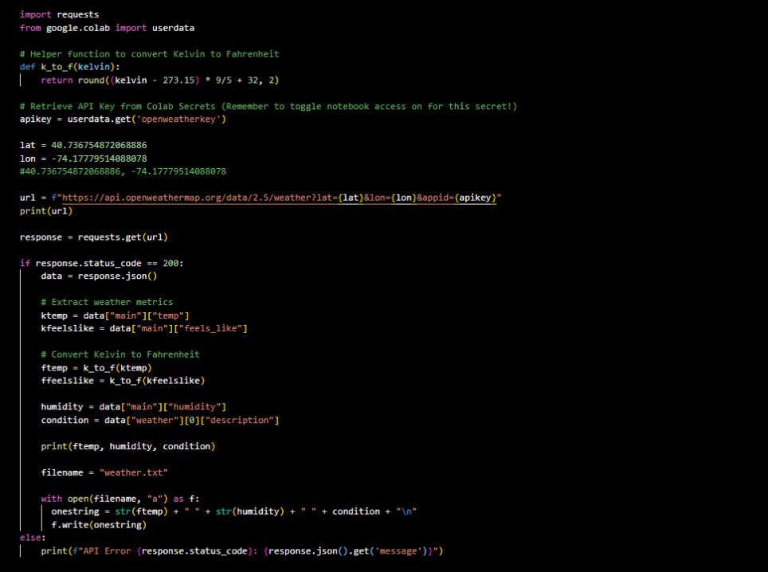
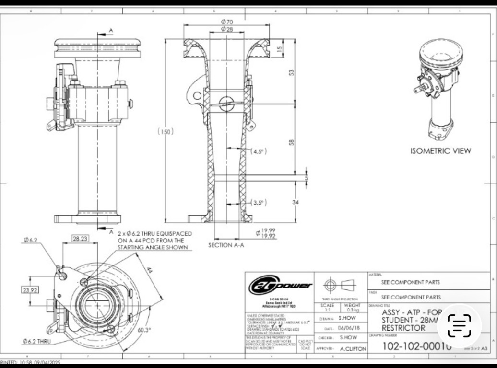
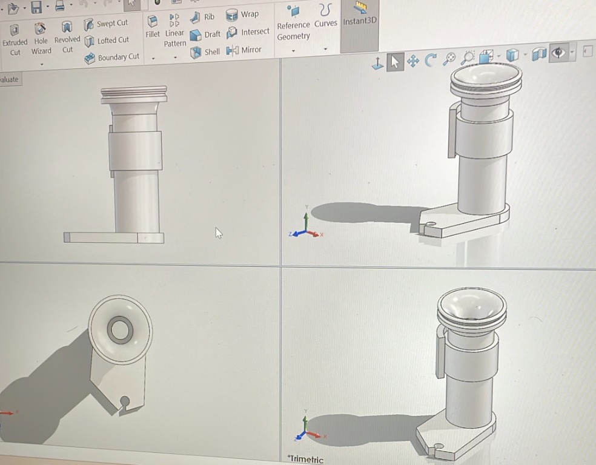

Selected work
Projects
01
API Information Retrieval
I worked on an API project to develop the skills necessary to use API keys to retrieve external information.
APIs · Data retrieval

02
Formula SAE Throttle Body
I built a CAD model of a throttle body in SolidWorks as a project for Formula SAE.
SolidWorks · CAD · Formula SAE
03
Radiator Air Intake
I helped measure the dimensions of a radiator and calculate the ideal air intake in CFM for a Formula SAE project.
Measurement · CFM · Formula SAE
Throttle body: from drawing to CAD

